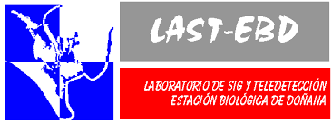
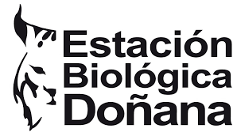

Gabinete de Formación del CSIC · Estación Biológica de Doñana
De una cuenta en blanco a código tuyo publicado y usable por otra persona.


Esto da por sabido el Code Editor, las colecciones, los filtros y las exportaciones. Si falta esa base, está entera en el curso de 2025.
Aquí vamos a lo que viene después:
El último día se contribuye a un repositorio de verdad: Ndvi2Gif, que está publicado en JOSS y en PyPI.
Para llegar ahí hay que haber pasado por GitHub, por un entorno de Python que funcione y por código que alguien más pueda leer. Eso ordena el curso entero.
ui.*, paneles, eventos y gráficosreduceRegions y optimizaciónEl miércoles 11 no hay clase por la huelga general: esa sesión se traslada al lunes 16.
Dieciséis personas de once centros del CSIC, de Canarias al Pirineo. Seis son de la casa.
Y la pregunta de la vuelta: con qué datos trabajas y qué te gustaría sacar de aquí. Lo apunto, y si cabe en el curso, lo metemos.
Cuenta, cuotas, GitHub y entorno local. Lunes 9.
La diferencia con un SIG de escritorio no es la potencia: es dónde está el dato. No se baja la imagen, se manda la receta al sitio donde ya está.
Eso cambia cómo se escribe el análisis, y es lo que vamos a aprender.
| Proyecto | Qué hizo |
|---|---|
| Global Forest Change Hansen et al., Science 2013 | La pérdida de bosque del planeta, año a año y a 30 m. Es el dataset que usamos para la máscara tierra/agua |
| Global Surface Water JRC, Nature 2016 | Dónde ha habido agua en la Tierra desde 1984, mes a mes. Es el que pone la lámina en el caso de los embalses |
| DEA Coastlines Digital Earth Australia | La línea de costa de un continente entero, recalculada cada año |
| Map of Life | Distribución de especies cruzada con cobertura del suelo, a escala global |
| Timelapse | Cuarenta años del planeta en vídeo, en el navegador |
Todas corren sobre Earth Engine. Las cuatro primeras son aplicaciones publicadas, igual que la que montaremos el día 3: alguien escribió el análisis y le puso una interfaz encima.
La documentación de Earth Engine es buena, está entera en abierto y los ejemplos se pegan y corren. Abrimos developers.google.com/earth-engine y la recorremos juntos, porque media hora aquí ahorra media semana después.
Y la que está dentro: la pestaña Docs del Code Editor, al lado de Scripts, trae la referencia completa y buscable sin salir de la ventana — es la que se acaba usando de verdad. Para marcadores de hoy: debugging, para cuando no sale, y best practices, para cuando sale pero tarda.
| Concepto | Qué es | Por qué te importa |
|---|---|---|
| Proyecto de Cloud | Obligatorio desde 2025 para usar GEE | La cuota va al proyecto, no a tu cuenta de Google |
| Uso no comercial | Investigación, docencia, ONG, administración | Gratuito, previa aprobación del registro. Es nuestro caso |
| Uso comercial | Tarifa por cómputo y por almacenamiento | Si el resultado es un servicio que se cobra, es este |
| EECU | La unidad de cómputo de Earth Engine | Es lo que se consume y lo que se mide. Se puede mirar |
| Cuotas | Concurrencia y exportaciones simultáneas | Esto lo notarás antes que el dinero |
Una App publicada corre con tu cuota, no con la del visitante. Guárdalo para el día 3.
| Repositorio | la carpeta con su historia entera |
| Commit | una foto del trabajo, con su por qué |
| Rama | trabajar sin pisar lo que funciona |
| Fork | tu copia de algo que no es tuyo |
| Pull request | «te propongo este cambio» |
git no es GitHub: git es un programa que va en tu ordenador y hay que instalar —en Windows no viene—; GitHub es la web donde se guardan los repositorios. Hoy usamos GitHub sin git.
No es un adorno: el código del curso vive aquí, y el ejercicio del último día es contribuir a un repositorio real.
Rellenar tu hueco en PARTICIPANTES.md, entero desde el navegador. Sin git, sin terminal, sin editor. GitHub hace el fork solo.
Un hueco por persona, y se toca solo esa línea. Así los dieciséis PR entran sin chocar: git compara línea por línea, y dos cambios en la misma línea son un conflicto.
Es un cambio de una línea: lo que importa es haber recorrido el flujo completo una vez.
Los tres casos en que el navegador se queda corto:
Miniconda antes que Anaconda: debajo de geopandas y rasterio hay GDAL, PROJ y GEOS, que son C y hay que compilar. conda instala los dos lados; pip no sabe de eso.
Y en Windows, que sois la mayoría: el Anaconda Prompt, no el cmd; nada dentro de OneDrive; y git se instala aparte, que no viene puesto.
# el entorno del curso, de una vez
conda env create -f environment.yml
conda activate gee2026
Elegir el intérprete en VS Code. Es el origen del ModuleNotFoundError con el paquete instalado y a la vista.
Y la única regla que hay que recordar: en base no se trabaja.
ee.Number(3) no es un 3var a = 3; // cliente: un número var b = ee.Number(3); // servidor: una receta print(typeof a); // number print(typeof b); // object // Esto NO funciona como esperas: if (b.gt(5)) { ... } // siempre cierto // Esto sí: ee.Algorithms.If(b.gt(5), ... );
Todo lo que empieza por ee. vive en los servidores de Google. En tu navegador solo hay la receta, no el resultado.
De ahí salen las tres reglas que gobiernan el curso:
getInfo() trae el dato a tu máquina, y es caro. Casi siempre se puede evitar.for sobre una colección es el error más caro que se puede cometer aquí. Se usa .map().Colecciones, series, zonales y optimización. Martes 10.
// UNA imagen: una fecha, un número var ndvi = img.normalizedDifference(['B8', 'B4']); // MUCHAS: la misma cuenta, todas las fechas var serie = coleccion.map(function (img) { return img.addBands( img.normalizedDifference(['B8', 'B4'])); });
Hasta la primera línea no hay nada que no se pueda hacer en QGIS. La segunda no tiene equivalente en un SIG de escritorio.
¿Y si esa imagen tenía nubes? ¿Y si ese día no representa el año? ¿Y si quiero cuarenta años?
Con una imagen no hay respuesta. Hay que cambiar de objeto, y ese cambio es el curso entero.
| Reductor | Qué contesta | Cuándo |
|---|---|---|
median() | el año «típico» | por defecto: es lo más robusto a nubes |
max() | cuándo la planta pudo más | fenología, y detección de barcos con radar |
min() | el suelo desnudo, el agua | cotas, láminas mínimas |
percentile([98]) | el máximo sin el píxel raro | cuando max() te lo decide un solo día malo |
count() | cuántas escenas válidas hay | siempre, y nadie lo mira |
count() explica la mitad de los resultados raros del curso: el número de observaciones cambia de un píxel a otro, porque las nubes no caen igual en todas partes. Mira siempre cuántas tiene el píxel del que hablas.
Cuatro trozos, cuatro reducciones, una imagen de cuatro bandas. Las tres primeras puestas como rojo, verde y azul: el color es la fenología.
| Rojo | máximo en invierno |
| Verde | máximo en primavera |
| Azul | máximo en verano |
| Blanco | activa todo el año: casi siempre regadío |
| Negro | nunca pasa el umbral: agua, suelo, urbano |
Solo caben tres bandas en un RGB, así que otoño se calcula, cuenta para la máscara y no se ve.
calendarRange(primero, último) asume meses contiguos y en orden: un invierno [12, 1, 2] devuelve un intervalo vacío y no da ningún error.
Los productos de la Colección 2 vienen como enteros. Para pasarlos a reflectividad: valor × 0.0000275 − 0.2.
Uno piensa: «es un cociente normalizado, el factor se cancela, puedo calcular el índice sobre los enteros». El factor sí se cancela. El offset no:
// sin escalar (G - S) / (G + S) // escalado (G - S) / (G + S - 14545)
Dos números distintos, los dos entre −1 y 1, los dos con pinta de índice. Ninguna función se queja. Si el umbral de agua se calibró con uno y aplicas el otro, el agua sale donde no está.
reproject() dentro de un map() fuerza el cálculo a escala fija en todas partes y tira por tierra la pirámide de resoluciones: de segundos a minutos, o User memory limit exceeded con los mismos datos.
El CRS y la escala se fijan en la exportación.
reduceRegion: una zona. reduceRegions: muchas, y escala.scale no es un detalle de la exportación: manda sobre el resultado.User memory limit | sube tileScale, baja la zona |
Computation timed out | precalcula a asset |
Too many concurrent | menos exportaciones a la vez |
Y antes de tocar nada: abrir el Profiler y mirar quién se come el tiempo.
import ee, geemap ee.Initialize(project='tu-proyecto') m = geemap.Map(center=[37.0, -6.3], zoom=10) m.addLayer(ndvi, {'min': 0, 'max': 0.8}, 'NDVI') m # y donde el análisis se vuelve cómodo: df = geemap.ee_to_df(tabla)
Lo que de verdad cambia no es la sintaxis, es lo que tienes alrededor: pandas, matplotlib, scikit-learn y tus propios ficheros.
Colab como entorno por defecto, sin instalar nada. Y para quien montó el entorno el día 1, el mismo cuaderno desde VS Code.
Dos cuadernos: uno de introducción a geemap y otro de reduceRegions hasta pandas, con las palancas de memoria y tiempo.
De un script a algo que usa quien no programa. Jueves 12.
var panel = ui.Panel({style: {width: '320px'}}); var sel = ui.Select({ items: ['Bornos', 'Iznájar', 'El Gergal'], onChange: function (nombre) { pintar(nombre); // y solo eso } }); panel.add(ui.Label('Embalse')).add(sel); ui.root.insert(0, panel);
ui.Panel, Label, Button, Select, Slider, Textbox, Chart y SplitPanel. Con eso está todo.
Recalcular la colección entera en cada clic. Una App que tarda 30 segundos no la usa nadie.
Qué guardar en el estado, qué recalcular y qué precalcular a un asset: eso es el trabajo de verdad.
La que se usa en el LAST-EBD, reducida a lo que cabe en una mañana: selector de fecha, máscara de inundación sobre la ortofoto, cortinilla para comparar dos fechas y una gráfica de superficie inundada.
Seis embalses con historial de «sopa verde». La lámina de agua la pone el JRC; el pigmento, el NDCI, que usa la banda de 705 nm que Landsat no tiene.
El análisis está escrito y comentado; la interfaz no: eso es el ejercicio.
Primero el análisis, después la interfaz. Es el orden que nunca se sigue, y el que evita descubrir que lo que ibas a envolver no funcionaba.
geemap, cuadros de mando, machine learning y despliegue. Viernes 13.
smileCart o random forest, partición 70/30 y matriz de confusión. Precisión global, del productor y del usuario.Un paquete propio, publicado en JOSS, PyPI y conda-forge, que envuelve justo lo que hemos hecho a mano: compuestos estacionales y por periodos, y la animación.
Y el repositorio sobre el que se trabaja el último día. Mirarlo hoy como usuario, mañana como quien propone un cambio.
De «el script que me funcionó» a código que usa otra persona. Lunes 16.
| 1 · Issue | describir el problema de forma que otro lo reproduzca |
| 2 · Fork y rama | tu copia, y un sitio donde equivocarte sin romper nada |
| 3 · El cambio | pequeño, con una sola intención |
| 4 · Pull request | explicar por qué, no solo qué |
| 5 · Revisión | recibirla sin tomárselo a mal, y darla sin hacer daño |
CITATION.cff para que te citen bien.Documentación oficial
developers.google.com/earth-engine
Catálogo de datos
earth-engine/datasets
Cliente contra servidor
guides/client_server · la página que hay que leer dos veces
geemap
geemap.org y sus tutoriales en YouTube
Spatial Thoughts
End-to-End Earth Engine, de Ujaval Gandhi. El mejor curso gratuito que hay
Awesome GEE
github.com/giswqs/Awesome-GEE
Community Catalog
gee-community-catalog.org · datasets que no están en el catálogo oficial
Dónde preguntar
Google Groups de Earth Engine y Stack Exchange de GIS
ndvi2gif
github.com/Digdgeo/Ndvi2Gif · el repositorio del último día
Este curso
github.com/Digdgeo/GEE_Course_2026
El material se queda publicado, y las dudas se pueden seguir preguntando donde se preguntan las cosas de código: en un issue.